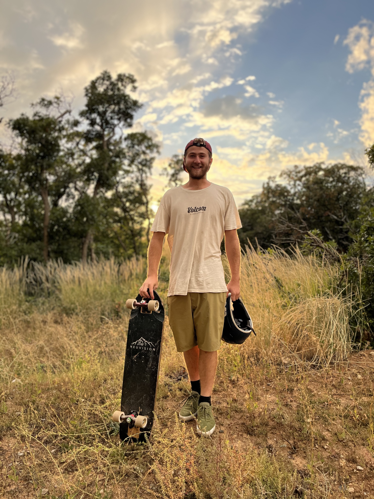

Tracer Adams
My life in a nutshell.

The Basics of My Life
I was born and raised in the mountains of Utah. Tucked into a narrow canyon known as
Hobble Creek, my father built our house and raised our family, most of what
I know is in that canyon, its pretty much where I learned to do everything I know,
and even beyond that its just a place I wish I always am at.
Since my birth my father exposed me to lots of very fun, very dangerous hobbies, and
lots of very rugged lines of work. he taught me carpentry, plumbing, sheetrock, insulation,
and lots of other things of that sort, he always told me that I can learn anything I set my mind
to, which has served me well throughout my life. I plan to continue with that logic and let
it build my future.
Skateboarding
Ive always been a fan of action sports, ever since I was little. for the longest time I wanted
to be a professional skateboarder, and over time I became a great skater, but in the end I decided
that it just wasnt what my destiny is. although I still love it, other passions have taken hold that
just don't allow me the time to pursue such a task.
I started skateboarding when I was 5 years old, it was kind of on and off for me until I was about
the age of 12, which is when I learned to kickflip consitently. for a long time I was the man to hit
your stairsets and gaps. I was like that until i was about 16/17, which is when I started hitting
rails a bit more. since then I've maintained myself as a pretty well rounded skater.
Longboarding
when I was about 11 years old I got my first longboard, thanks to my neighbors the Quackenbushes
who sparked the whole interest when I was a bit younger than that. when I was 12 I learned to slide
and that started a whole era, me and the whole squad which we called couch crew
were out skating the local hills every single day to hone in our abilities. fast forward 5 years
later me and all my friends were all skating fast down the steepest roads in the united states.
from the time I started skating, my friends and I skated roads all around the US, and even a couple
spots around the globe, reaching speeds of up to 70mph in some spots.
as the sport has progressed the bar has been set a bit higher, and I still love skating downhill but
it's another hobby that I have accepted as something that is difficult to invest a lot of time
into these days, I will still do it, but not competetively as before, and I remain comfortable in
my ability to skate any road, and will likely be able to for the rest of my life.
Speedflying
around the time I was 19, my dad started to develop issues with his spine. Him being an avid
rock climber this made it very difficult to do the things he loved, luckily for him, he learned to fly
paragliders on a climbing trip he took to europe back in the 80's. because flying is so much less
physically demanding (if done properly) he decided to get back into it to continue having fun in his later
years. He really wanted me to fly with him, so I went half and half on a wing and harness with him and he
taught me how to fly. Well, he taught me how to launch and land. Which served me pretty well, although
the lessons were pretty brief.
Jump ahead a few months and my cousin noah gets me in touch with his co-workers who happen to be aspiring
speedfly pilots. this got me a job in arborculture with a company known as Rivendell.
for 3 years me and these dudes lived as birds, climbing trees all day and finishing the day with a flight
off the summit of a mountain. These dudes I've been flying with have become exceptional nylon pilots and have
helped me to become a much better pilot than I would likely be without them, along with comradarie that I
hold very dear to me. expanding my friend group even more, by this point I have developed friends in many places.
Music
Music has become one of the biggest parts of who I am, and is a big part of how I was raised. my family on my dads
side are very interested in the arts, my dad and my uncle played in a few bands and my dad for a long time aspired
to be the best drummer he could be amongst all of his other hobbies. He instilled in me a passion for music as well.
when I was 13, I took guitar lessons in my middle school and my dad taught me some drums, and with those skills I would
jam with my buddies bridger, and my buddy Eli. after some time, I eventually got a bass and a keyboard and developed my
skills even more for music as a whole, over the years of playing music, the crew of people who I would jam with
grew and shrank as rapidly as it came to be, which was fun, but also kind of a struggle. It was hard to have consistency
With an inconsitent group, the folks who have been the most consistent has been one of my best friends Roger, and Eli.
We did write some music together but I haven't released it, mostly because I haven't had the money to put it out there.
I eventually tried to become qualified to make music my career, and took a semester of sound engineering through Shaw academy.
i finished the semester, but never accumulated the gear to make it a reality. eventually I'd like to get the stuff together.
aside from that, I've released 2 albums, 3 ep's, and 4 singles. my most recent being flow.
Content/Achievments

Skate Edit

Downhill Edit

Flying Edit

Discography

Places I've gone, things ive done

Goals and Aspirations
Inspirations
Musical Inspiration
I have inspirations from all over when it comes
to the genres and artists that have inspired me
to play music in the first place, but there are
a few in particular that I should pay serious homage to
Pink Floyd was and arguably is my favorite band,
the soundscapes and grooves along with the experimental
synthesizers and brilliantly organized concept
albums blew my mind as a young listener, and still does.
Tame Impala is arguably the reason why I started making
music in the first place, a lot of what I first learned
on drums was Kevin Parkers pieces. his music
inspired me in so many ways as a listener and a musician
"Theres a world out there
and its calling your name."
- Kevin Parker
Radiohead is the one who rivals pink floyd more
Than any other band in my playlists, the musicianship
and raw energy/emotion conveyed through the music
strikes me in a way that no other band has been able.
Alfa Mist and Yussef Dayes have got to be some of
the best performing musicians on the planet, noone
can argue with me on that, theyre ability to just
consitently be building beautiful musical ideas
that seem to breathe and pulse while playing improv
the way they can build tension and release is unmatched.